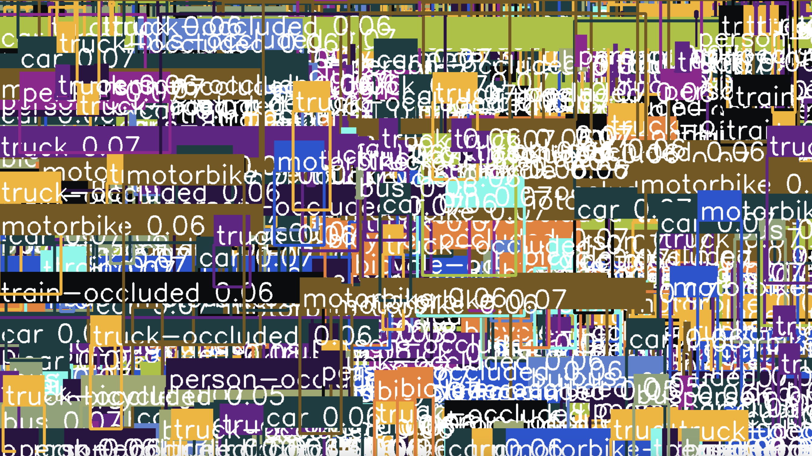

Abstract Detections
Home
Abstract images created from the output of a state of the art computer vision model (YOLOv5x).
Ususally these outputs are maticulously filtered and removed to produce desired outcomes, but here we allow all of the outputs to be visualised to produce a cluttered representation of what the model is "seeing".
Medium: PyTorch, OpenCV, Python
Abstract Detections #1
Abstract Detections #2
Abstract Detections #3

Abstract Detections #4